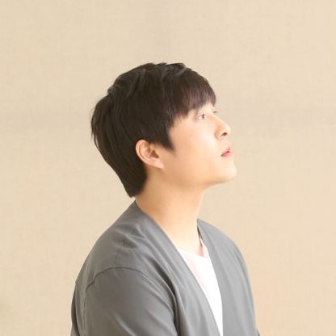

| 데뷔 | 2005년 11월 3일 |
|---|---|
| 멤버 | 이진성, 故김민수, 한승희(탈퇴), 임한별(탈퇴) |
| 소속사 | 먼데이키즈 컴퍼니 |
| 장르 | 발라드 |
2인조 그룹으로 데뷔해 3인조 그룹으로 바뀌었다가 현재는 솔로 가수로 활동중이다.
'먼데이키즈'라는 그룹명은 데뷔 멤버 이진성과 김민수의 첫 만남이 월요일이었다는 것에서 만들어졌다.
2008년 4월 29일에 김민수가 오토바이 사고로 사망하면서 이진성은 그룹 해체 후 솔로로 활동하다가, 2010년 4월에 새로운 2명의 멤버(한승희, 임한별)와 함께 3인조 그룹으로 먼데이 키즈를 재결성하여 새 앨범《New Sentimental》을 발매했다. 이후 멤버들간의 음악견해 차이로 한승희와 임한별이 탈퇴하여 원년멤버 이진성만 남게 되었다. 사람들이 원년멤버 김민수를 잊지않고 기억 해주길 바라는 마음에 먼데이 키즈란 이름으로 지금까지 이어가고 있다.
<1기 이진성,김민수 (2005~2008)>
<1기 임한별,이진성,한승희 (2010~2014)>
<3기 이진성 (2016~)>
